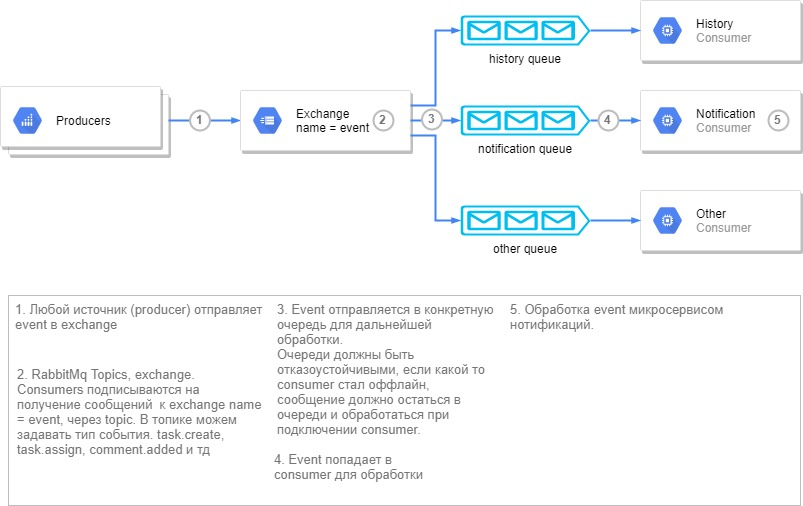

Уведомления (переходная версия)¶
Уведомление через событие¶
Так как микросервис нотификаций строится на основе events, то до реализации новой версии в ECOS v.4. используется текущая реализация.
Архитектура events¶
Получение отправка events из alfresco¶
Отправка сообщений (events) и получение строится на основе rabbitmq и моделей events в библиотеке - ecos-events. на стороне producer и consumer строится подключение к rabbitmq.
На стороне alfresco, свойства, отвечающие за подключение:
event.server.connection.enabled=false
event.server.host=localhost
event.server.port=0
event.server.username=
event.server.password=
Очередь durable, сообщения требуют обязательного подтверждения обработки. Если при обработки сообщения произошло исключения, то сообщения попадает в dead-letter-queue с определенном ttl, после истечения ttl сообщения поступает обратно в «рабочую» очередь для повторной обработки. Пока есть пару проблем с повторной обработкой, см. блок TODO Проблемы.
На данный момент из alfresco отправляются events по задачам - task.create, task.assign, task.compete, task.delete. По умолчанию выключена, свойства отвечающие за отправку в alfresco:
event.task.create.emit.enabled=false
event.task.assign.emit.enabled=false
event.task.complete.emit.enabled=false
event.task.delete.emit.enabled=false
Имеется поддержка нескольких инстансов alfresco, на основе tenant id. В alfresco добавлено свойство ecos.server.tenant.id, на основе которого реализовано разделение.
Обработка events для отправки нотификаций по задачам¶
При получении events осуществляется проверка подписок, если находится «подписчик» на текущий тип event, то проверяется наличие пользователя в pooledActors и условия отправки. При совпадении пользователя и выполнении условия, происходит передача event в обработчики. Сейчас реализован обработчик - firebase notifications.
Условия отправки, шаблон уведомления¶
Моделью данных для вычисления условия и шаблона является сам event + дополнительная информация, которую можно запросить по records api. Сейчас можно запросить данные из alfresco (реализовано через basic auth, выделяется отдельный пользователь).
Условие вычисляется на groovy.
Шаблон обрабатывает freemarker.
При построении запроса в records api, так же можно использовать шаблонизатор freemarker для доступа к модели events.